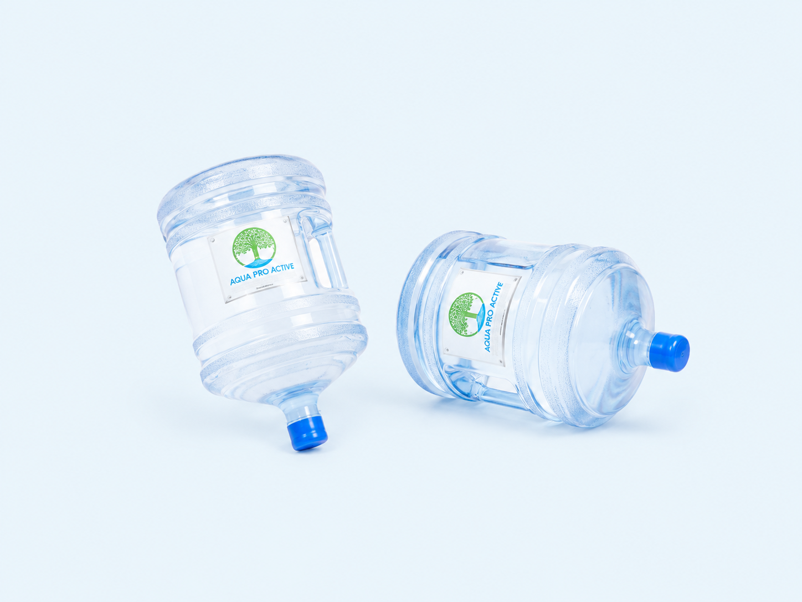
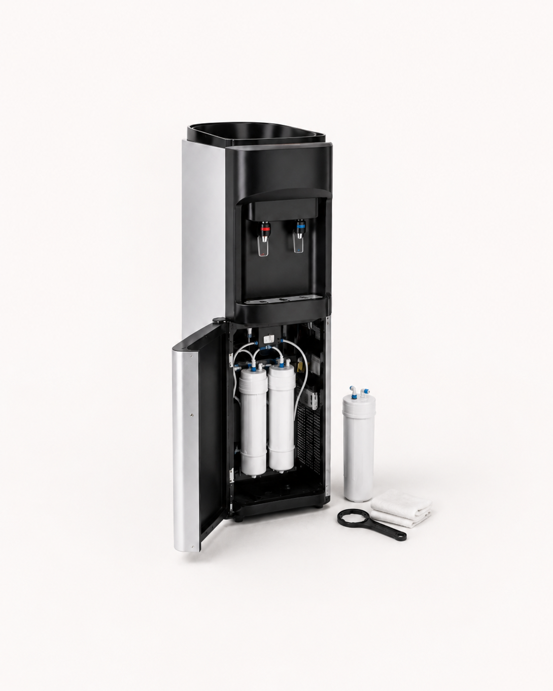

Prodej moderních vodomatů
Dodáme kvalitní a spolehlivé vodomaty pro kanceláře, provozovny, čekárny i domácnosti.

VODOMATY
Prodáváme a servisujeme moderní vodomaty, dodáváme přírodní pramenitou vodu Aqua Pro Active a zajišťujeme pravidelnou sanitaci pro bezpečný a hygienický provoz.
CO NABÍZÍME
Dodáme kvalitní a spolehlivé vodomaty pro kanceláře, provozovny, čekárny i domácnosti.
Zajišťujeme dodávku přírodní pramenité vody vhodné pro každodenní pitný režim.
Postaráme se o čištění, kontrolu a hygienickou údržbu zařízení.
Nastavíme servisní plán podle provozu a četnosti používání.
AQUA PRO ACTIVE
Dodáváme přírodní pramenitou vodu Aqua Pro Active vhodnou pro každodenní pitný režim ve firmách, kancelářích, provozovnách i domácnostech. Kromě samotných vodomatů řešíme také dodávku vody a dlouhodobou péči o zařízení.


SANITACE
Provádíme pravidelné čištění a sanitaci vodomatů, aby byla zachována kvalita vody, čistota zařízení a hygienický provoz.
VHODNÉ PROVOZY
PROČ AQUA PRO ACTIVE
Aqua Pro Active je přírodní pramenitá voda vhodná pro každodenní pitný režim.
Nabízíme vodomaty s důrazem na design, funkčnost a nízké provozní náklady.
Od výběru zařízení přes dodávku vody až po pravidelnou sanitaci a servis.
JAK SPOLUPRÁCE PROBÍHÁ
Pomůžeme zvolit zařízení podle prostoru, počtu lidí a způsobu využití.
Vodomat doručíme, umístíme a připravíme k používání.
Postaráme se o pravidelnou dodávku vody Aqua Pro Active podle potřeby.
Zajistíme pravidelnou hygienickou údržbu a technickou kontrolu zařízení.
VODA DO PROVOZU
Navrhneme řešení podle počtu lidí, prostoru a četnosti používání. Ozvěte se nám a připravíme nabídku na míru.